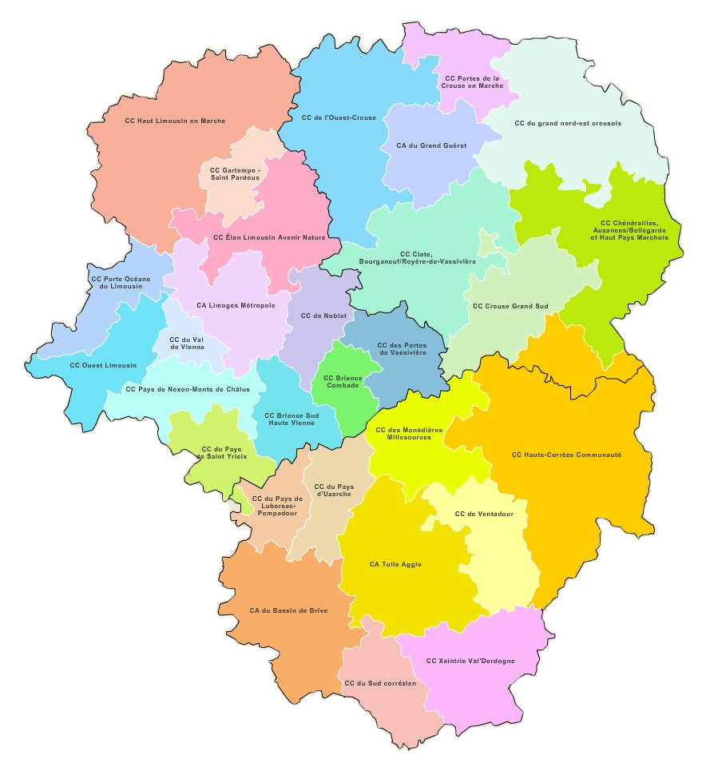

INSTALLEZ VOUS DANS NOTRE COMMUNE !
Bienvenue en terre creusoise dans un territoire de ville et de campagne
Au coeur de la France, en Massif central, en Nouvelle-Aquitaine, en
Limousin, en Creuse, entre Marche
et Berry…
A 1h de Montluçon et Limoges, 3h30 de Paris, 3h de l’océan...
C’est ici que vit le territoire du Grand Guéret et des Portes de la Creuse en Marche !
Autour des vallées de la Creuse, de la Petite Creuse, de la Gartempe et des Monts de
Guéret.
Les prés d’élevage, les cultures cloisonnées de haies bocagères, les forêts de feuillus
telle la
Forêt de Chabrières, les bourgs ruraux et villages éparses ou encore la ville de Guéret…
telle est
la mosaïque de paysages qui caractérise ce territoire qui a su garder sa dimension humaine!
Portées par la politique d’Accueil et d’Attractivité de la Communauté d’Agglomération du
Grand
Guéret et de la Communauté de communes Portes de la Creuse en Marche, C’est ici que se
mobilisent 41
communes et tout un réseau de référents accueil pour vous accueillir!
L’objectif : maintenir et faire venir de nouvelles populations, aider les nouveaux
habitants à
s’installer comme à s’intégrer localement et donner une image positive à tous pour un
territoire
vivant !
Alors bienvenue !
Chabatz d’entrar (« Finissez d’entrer »)
Pour faliciter votre installation sur le territoire, découvrez nos guides d'accueil
à télécharger ici :
#1 - Les Portes de la Creuse
#2 - Le Grand Guéret
# 3 - Votre commune (demandez à votre mairie)
Vous y trouverez des renseignements pratiques concernant la vie quotidienne sur le
territoire (offre de services, éducative, sportive, associative, culturelle...).
Vous avez par ailleurs besoin :
de réponses et de renseignements pratiques tant sur votre projet de vie ou projet
professionnel; d'être aiguillé vers les interlocuteurs de l'accompagnement, d'échanger sur
l'offre du territoire...
Contactez ou rendez-vous au sein des 2 Tiers-Lieux du territoire :
La Quincaillerie - 22, avenue Charles de Gaulle - 23000 GUERET - Tél. : 05 55 41 45
13 -
Adresse mail : contact@laquincaillerie.tl
Le Chai - 22, rue Grande - 23220 BONNAT - Tél. : 05 44 30 07 66 - Adresse mail : lechai23@orange.fr
Parce qu’un déménagement amène beaucoup de questions sur son nouveau/futur
territoire, il est essentiel d’y trouver les réponses en retour :
- c’est ici qu’intervient le réseau des référents accueil !
Les référents accueil, ce sont des élus, des habitants, des acteurs de la
vie locale qui
se mobilisent pour répondre au mieux à vos questions et faciliter votre installation en
proximité tout comme votre intégration :
- mise en relation, infos utiles (services, loisirs, garde d’enfants, écoles, réseaux
locaux…), actions d’accueil, rencontre des habitants, etc.
25 communes du territoire de projet se sont engagées dans cette démarche pour vous
apporter un accueil de qualité !
Ajain, Anzême, Bonnat, Bussière-Dunoise, Champsanglard, Châtelus-Malvaleix, Genouillac,
Glénic, Guéret, La Cellette, La Saunière, Lourdoueix-Saint-Pierre, Méasnes, Moutier-Malcard,
Nouziers, Roches, Peyrabout, Saint-Dizier-les-Domaines, Saint-Fiel, Saint-Silvain-Montaigut,
Saint-Sulpice-le-Guérétois, Saint-Vaury, Sainte-Feyre, Savennes.
Alors, n’hésitez pas à les solliciter en vous rapprochant de votre mairie.
Retrouvez ci-dessous la carte des communes de la Communauté d'Agglomération du Grand Guéret.
AGGLO'BUS GRAND GUÉRET MOBILITÉ
Le réseau agglo’Bus est organisé autour de 4 services majeurs :
- 7 lignes régulières urbaines dans Guéret,
- 4 secteurs desservis par des navettes sur le Grand Guéret en Transport à la demande Tad
ouvert à
tous,
- des services scolaires,
- un espace dédié à vos déplacements : l’Espace Mobilité.
Le réseau de transports publics de la Communauté d’Agglomération du Grand Guéret dessert les
25
communes du territoire et permet ainsi aujourd'hui :
- de rejoindre directement Guéret depuis les communes rurales,
- de rejoindre les EHPAD*, établissements de santé et pôles de services du Grand Guéret
depuis les
communes rurales ou depuis Guéret,
- de rejoindre les pôles de services** depuis les communes rurales,
- de faciliter l’accès au centre-ville de Guéret en proposant un mode alternatif à la
voiture et
d’en rendre plus accessibles les services (équipements, services publics, services de soins,
commerces,
établissements scolaires...).
* EHPAD : Établissement d’Hébergement pour Personnes
Âgées
Dépendantes
** Pôles de services : Mairie, commerces, restaurants...
LES MODES DE GARDE ET STRUCTURES DU GRAND GUÉRET
Petite enfance
Pour les enfants, différents modes de garde sont proposés sur le territoire de la Communauté d'Agglomération du Grand Guéret : le multi-accueil (collectif ou familial), la micro-crèche et les assistant(e)s maternel(le)s agréé(e)s par le Conseil Départemental de la Creuse.
Contacts utiles :
Coordonnatrice Petite Enfance
05.55.41.04.48
petite.enfance@agglo-grandgueret.fr
Lien utile :
Relais Petite Enfance du
Grand Guéret
OFFRES D'EMPLOI
Agent d'entretien paysager et petite maintenance (contrat à durée déterminée)
Recherche :
Un(e) agent d'entretien paysager et petite maintenance

Educateurs (h/f) de Jeunes Enfants
Recherche :
Educateurs (h/f) de Jeunes Enfants
Diplôme d'Etat d'Educateur de Jeunes Enfants exigé soit 1 poste basé au Multi-accueil
collectif de Guéret + 1 poste au Multi-accueil collectif de Saint-Vaury
Auxiliaire de puériculture pour remplacement
Recherche :
Auxiliaire de puériculture (h/f)
Pour assurer le remplacement d'un agent momentanément indisponible
Poste basé au Multi-accueil de Guéret
CDD pour une durée de 3 mois à compter du 1er septembre